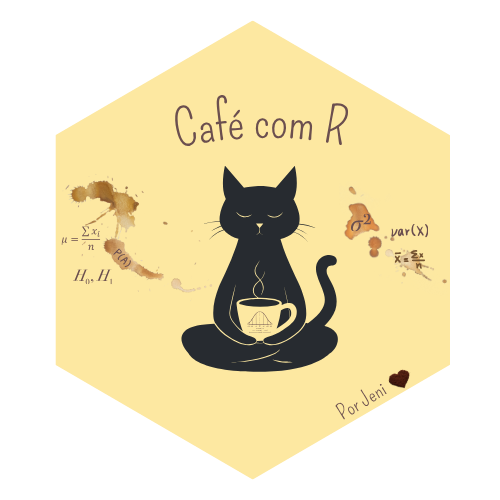

Uma decisao tecnica com impacto real no seu codigo
O pipe nao e apenas syntax sugar.
Ele muda a forma como voce le e escreve transformacao de dados:
# Sem pipe — leitura de dentro para fora
summarise(group_by(filter(dados, ano == 2024), regiao), total = sum(receita))
# Com pipe — leitura linear, como o problema de negocio acontece
dados |>
filter(ano == 2024) |>
group_by(regiao) |>
summarise(total = sum(receita))Codigo que conta uma historia e codigo que sobrevive ao time.
%>% ou ja migrou para |>?%>% foi criado por Stefan Milton Bache no pacote {magrittr} em 2014{dplyr} e o tidyverse|> como operador nativo_library(dplyr)
# magrittr
dados %>%
filter(status == "ativo") %>%
group_by(segmento) %>%
summarise(
receita_media = mean(receita),
n = n()
)
# nativo — sem dependencia de pacote
dados |>
subset(status == "ativo") |>
aggregate(receita ~ segmento, data = _, mean)Para pipelines simples de transformacao: funcionalmente identicos.
# magrittr: placeholder . funciona em qualquer posicao
dados %>%
lm(receita ~ idade + segmento, data = .) %>%
summary()
# nativo: placeholder _ exige R >= 4.2 e sintaxe especifica
dados |>
lm(receita ~ idade + segmento, data = _) |>
summary()
# Diferenca importante: no pipe nativo, _ so funciona
# com argumento nomeado. Isso nao funciona:
# dados |> lm(receita ~ idade, _) # ERRO# Contexto: base de vendas com inconsistencias
# Objetivo: preparar dados para relatorio mensal de performance
library(dplyr)
library(lubridate)
vendas_limpo <- vendas_raw |>
filter(!is.na(valor), valor > 0) |>
mutate(
mes = floor_date(data_venda, "month"),
canal = toupper(trimws(canal))
) |>
group_by(mes, canal, regiao) |>
summarise(
receita_total = sum(valor),
ticket_medio = mean(valor),
n_transacoes = n(),
.groups = "drop"
) |>
arrange(desc(mes), desc(receita_total))Este pipeline resolve um problema real: entregar dado limpo e agregado para quem decide.
| Criterio | %>% |
|> |
|---|---|---|
| R < 4.1 | Unico disponivel | Nao existe |
| Placeholder flexivel | . em qualquer posicao |
_ so em arg nomeado (R 4.2+) |
| Sem dependencia | Precisa de magrittr/dplyr | Nativo — zero dependencia |
| Codigo legado | Mantenha consistencia | Pode criar confusao no time |
| Novo projeto | Funciona bem | Preferivel hoje |
| Performance | Marginal diferenca | Ligeiramente mais rapido |
|> nativo sem hesitar%>%: nao migre por migracao — so migre se trouxer ganho real%>% por segurancalm(), t.test() ou funcoes onde o dado vai como argumento nomeado: |> funciona perfeitamenteA escolha entre |> e %>% nao e o que vai te diferenciar como analista.
O que diferencia:
Pipe e meio. Clareza e fim.
Comenta aqui: |> nativo ou %>% magrittr — e por que?
Salva esse slide para nao esquecer a diferenca.
Esta apresentacao e parte do projeto Cafe com R
E OPEN. USE. COMPARTILHE.
Que cada script abra uma nova conversa.
Que o Cafe com R se torne um ponto de encontro nosso.

Jennifer Lopes | Cafe com R